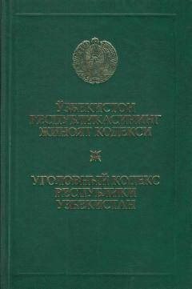

JKO'zbekiston Respublikasining rasmiy Jinoyat Kodeksi — jinoyat va jazo asoslari.
Ushbu kitob O'zbekiston Respublikasining Jinoyat Kodeksi bo'lib, 1994-yil 22-sentabrda qabul qilingan va 1995-yil 1-apreldan kuchga kirgan. Kodeks umumiy va maxsus qismlardan iborat bo'lib, jinoyat tushunchasi, javobgarlik asoslari, jazo turlari va ularni tayinlash tartibini belgilaydi. Shaxsga qarshi jinoyatlar, iqtisodiyot, ekologiya, harbiy xizmat va boshqa sohalardagi jinoyatlar ham qamrab olingan.